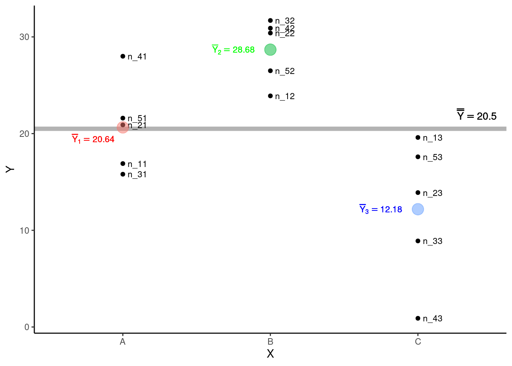
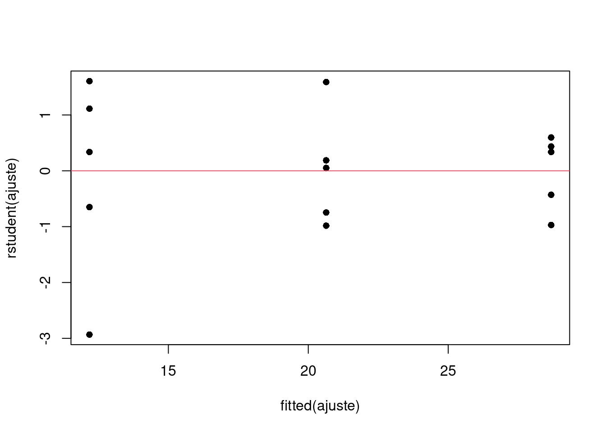
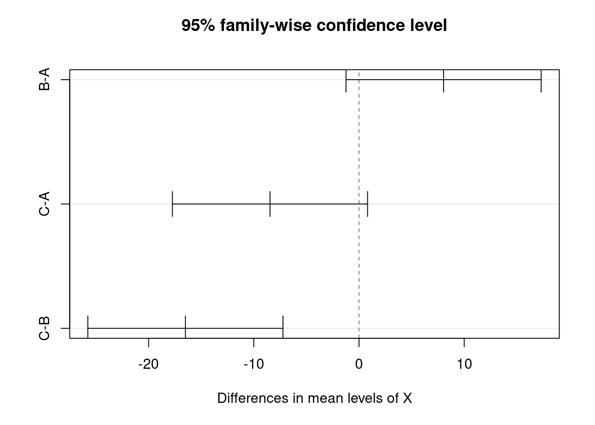

Capítulo 20 Análise de variância de um fator
A Análise de Variância (ANOVA) desenvolvida por R. A. Fisher aplica-se à uma classe de desenho experimental em que a variável resposta \(Y\) é contínua e a variável explanatória \(X\) é categórica com \(2\) ou mais níveis. A ANOVA permite testarmos a hipótese de que duas ou mais médias amostrais (\(\overline{Y}_i\)) possam ter sido obtidas de uma mesma população estatística com média \(\mu\). Alternativamente, podemos concluir que as médias amostrais diferem umas das outras, de tal forma que devemos assumir que foram amostradas a partir de diferentes populações estatísticas, nas quais ao menos um \(\mu_i\) seja diferente dos demais. Iremos denominar estas duas possibilidades de hipótese estatísticas sobre a relação entre as médias populacionais.
20.1 O modelo da ANOVA e as hipóteses estatísticas
O modelo pode ser representado por:
\[Y_{ij} = \mu + A_i + \epsilon_{ij}\]
onde \(Y_{ij}\) é a variável resposta associada à observação \(i\) do tratamento \(j\), \(\mu\) representa a média geral e \(A_i\) o efeito do tratamento \(i\). O termo \(\epsilon_{ij}\) é denominado de resíduo (ou erro) associado a cada observação, que assumimos ter distribuição normal com média zero e variância constante.
\(\epsilon \sim \mathcal{N}(0, \sigma^2)\)
As hipóteses estatísticas no modelo de ANOVA são:
\(H_0: \mu_1 = \mu_2 = \mu_3 =.... = \mu_k\) (HIPÓTESE NULA)
\(H_a\): ao menos um par de médias é diferente (HIPÓTESE ALTERNATIVA)
A hipótese nula (\(H_0\)) define a ausência de diferenças entre as médias populacionais enquanto a hipótese alternativa (\(H_a\)) refere-se a qualquer possibilidade diferente de \(H_0\). Se temos exatamente dois níveis em \(X\), a comparação de médias pode ser feita por meio de um teste \(t\). A ANOVA deve ser utilizada quando temos mais de dois níveis em \(X\). Neste sentido, o teste \(t\) é um caso particular da ANOVA.
20.2 Partição da soma dos quadrados
A ANOVA consiste basicamente da partição da soma dos quadrados (Capítulo 11) seguida da construção de um teste estatístico apropriado (o teste \(F\)) para verificar as plasibilidade de \(H_0\). Apresentaremos aqui um exemplo simples descrito na figura e na tabela abaixo para descrever o ajuste da ANOVA.

Para deixarmos claro as notações que iremos adotar adiante neste capítulo vamos definir que:
- Temos \(k = 3\) grupos (
A,BouC) e para cada grupo \(n = 5\) observações. Denotamos por \(n_{ij}\) o número de observações dentro de cada grupo, em que \(i\) é a i-ésima observação (\(i = 1\) a \(5\)) do j-ésimo grupo (\(j = 1\) a \(3\) - gruposAaoC). Neste exemplo, o número de observações em cada grupo é o mesmo (\(n_1 = n_2 = n_3 = n\)), de modo que o total de observações é dado por:
\(N = k \times n = n_1 + n_2 + n_3 = 15\)
A média de cada grupo será denotada por \(\overline{Y}_j\), que neste exemplo são: \(\overline{Y}_1 = 20.64\) (grupo
A), \(\overline{Y}_2 = 28.68\) (grupoB) e \(\overline{Y}_3 = 12.18\) (grupoC). Estas médias estimam as quantias \(\mu_1\), \(\mu_2\) e \(\mu_3\) sobre as quais versam as hipóteses do modelo.Vamos denotar por \(\overline{\overline{Y}}\) a Grande Média, isto é, a média geral de todas as observações independente do grupo de origem e que é utilizada para estimar \(\mu\).
\[\overline{\overline{Y}} = \sum_{j = 1}^{k}\sum_{i = 1}^{n}\frac{Y_{ij}}{N} = \frac{\overline{Y_1} + \overline{Y_2} + \overline{Y_3}}{3} = 20.5\]
Podemos agora observar estes elementos no gráfico de dispersão.

Para ajustar o modelo de ANOVA a estes dados precisamos calcular \(3\) quantias: i - a Soma dos Quadrados Totais (\(SQ_{Total}\)), ii - a Soma dos Quadrados dos Tratamentos \(SQ_{Trat}\) e iii - a Soma dos Quadrados dos Resíduos \(SQ_{Res}\).
- Soma dos Quadrados Totais \(SQ_{Total}\): mede as diferenças entre \(Y_{ij}\) e \(\overline{\overline{Y}}\). Temos nesta expressão o somatório dos desvios ao quadrado de todas as observações com relação à grande média independente do grupo de origem de cada observação.
\[SQ_{Total} = \sum_{j = 1}^{k}\sum_{i = 1}^{n}(Y_{ij} - \overline{\overline{Y}})^2\]
- Soma dos Quadrados dos Tratamentos \(SQ_{Trat}\): mede as diferenças entre as médias dos tratamentos \(\overline{Y}_j\) e \(\overline{\overline{Y}}\), sendo portanto os desvios ao quadrado da média de cada tratamento subtraída da grande média. \(SQ_{Trat}\) também é chamada de soma dos quadrados entre grupos ou entre tratamentos
\[SQ_{Trat} = \sum_{j = 1}^{k}\sum_{i = 1}^{n_{j}}(\overline{Y}_{j} - \overline{\overline{Y}})^2 = \sum_{j = 1}^{k}n_{j}(\overline{Y}_{j} - \overline{\overline{Y}})^2\]
- Soma dos Quadrados dos Resíduos \(SQ_{Res}\): mede as diferenças entre cada observação \(Y_{ij}\) e a média de seu próprio grupo \(\overline{Y}_{j}\). \(SQ_{Res}\) também é chamada de soma dos quadrados dentro dos grupos ou dentro dos tratamentos
\[SQ_{Res} = \sum_{j = 1}^{k}\sum_{i = 1}^{n_{j}}(Y_{ij} - \overline{Y}_{j})^2\]
20.2.1 A característica aditiva das somas dos quadrados
A partição da soma dos quadrados consiste em decompor a variação total do experimento em uma parcela atribuída à variação entre tratamentos e outra parcela da variação dentro dos tratamentos. Isto é possível pois as somas dos quadrados definidas acima podem ser expressas de forma aditiva como:
\[SQ_{Total} = SQ_{Trat} + SQ_{Res}\]
Deste modo, é possível demostrar que:
\(\sum_{j = 1}^{k}\sum_{i = 1}^{n}(Y_{ij} - \overline{\overline{Y}})^2 = \sum_{j = 1}^{k}n_{j}(Y_{j} - \overline{\overline{Y}})^2 + \sum_{j = 1}^{k}\sum_{i = 1}^{n}(Y_{ij} - \overline{Y}_{j})^2\)
20.2.2 Medindo a associação entre \(Y\) e \(X\)
A característica aditiva das somas dos quadrados pode ser utilizada para mensurar o grau de dependência de \(Y_{ij}\) com respeito aos diferentes tratamentos. Compare as duas figuras abaixo:

A soma dos quadrados dentro dos grupos é a mesma nas duas figuras (\(SQ_{Res} = 362.6\)). No entanto, na figura da esquerda, em que as médias dos tratamentos são similares (e consequentemente próximas à grande média), a soma dos quadrados entre os tratamentos é muito menor (\(SQ_{Trat}^{esquerda} = 15.8\)) que na figura da direita, em que as médias dos tratamentos estão distantes entre si (\(SQ_{Trat}^{direita} = 680.8\)). É desta forma que a partição das somas dos quadrados nos permite diferenciar situações em que: i - a média dos grupos depende dos níveis do tratamento (figura da direita); de situações em que ii - a média não depende dos níveis do tratamento (figura da esquerda).
20.3 Quadrados médios e graus de liberdade
Para que os somatórios dos quadrados expressem uma medida de variação é necessário corriglos em função dos graus de liberdade (\(gl\)), obtendo assim Quadrados médios dados abaixo:
- Quadrado médio total (\(QM_{Total}\))
\[QM_{Total} = \frac{SQ_{Total}}{gl_{Total}}\]
em que \(gl_{Total} = N - 1\)
- Quadrado médio entre tratamentos (\(QM_{Trat}\))
\[QM_{Trat} = \frac{SQ_{Trat}}{gl_{Trat}}\]
em que \(gl_{Trat} = k - 1\)
- Quadrado médio dentro dos tratamentos (\(QM_{Res}\))
\[QM_{Res} = \frac{SQ_{Res}}{gl_{Res}}\]
em que \(gl_{Res} = N-k\)
Assim como a soma dos quadrados, os graus de liberdade também têm característica aditiva.
\[gl_{Total} = gl_{Trat} + gl_{Res} = (k - 1) + (N - K) = N - 1\]
Os quadrados médios que são estimativas de variâncias. Compare por exemplo a expressão do \(QM_{Total}\) com a fórmula da variância amostral (\(s^2\)) (Capítulo 6) e verá que excetuando mudanças de notação, as expressões são essencialmente as mesmas.
20.4 Estatística \(F\) e teste de hipóteses
Uma vez que os quadrados médios são estimativas de variância, uma estatística de teste apropriada é:
\[F_{calculado} = \frac{QM_{Trat}}{QM_{Res}}\]
A estatística \(F\) (ou razão-\(F\)) está associada à distribuição de probabilidades \(F\) e nos permite comparar a variância associada ao tratamento com a variância associada aos resíduos. Em mãos do valor de \(F_{calculado}\), o teste de hipóteses é possível após a definição do nível de significância \(\alpha\).
20.4.1 Nível de significância
Assim como discutimos nos testes \(Z\) e \(t\), o valor de \(\alpha\) estabelece um limite de aceitação para \(H_0\), isto é, um limite a partir do qual a estatística do teste se torna tão extrema que nos leva a assumir que \(H_0\) é improvável, devendo portanto ser rejeitada em favor de \(H_a\). Este passo é possível pois o valor de \(F_{calculado}\) pode ser associado à distribuição \(F\) de probabilidades, o que nos permite calcular a probabilidade:
\[P(F_{calculado}) \le \alpha\]
Para facilitar a notação denominaremos \(P(F_{calculado})\) simplesmente de valor de \(p\) expresso em vermelho na figura abaixo:
Se \(p > \alpha\) –> ACEITAMOS \(H_0\)
Se \(p \le \alpha\) –> REJEITAMOS \(H_0\) (e assumimos \(H_a\) como verdadeira)

Tradicionalmente utiliza-se \(\alpha = 0.05\). Neste caso, \(H_0\) seria rejeitada somente de \(p \le 0.05\). Algumas área da medicina por eoutro lado, são tradicionais por utilizar valores de \(\alpha = 0.01\), o que torna o experimento menos sujeito ao erro do tipo I (Capítulo 17). Portanto, outros valores de \(\alpha\) diferentes de \(0.05\) podem ser escolhidos. O fundamental é que esta decisão, isto é, sobre o nível de significância \(\alpha\) a ser adotado, seja feita previamente à obtenção dos dados.
20.5 Um exemplo de ANOVA
Vamos exemplificar o passo-a-passo de uma ANOVA utilizando nosso exemplo fictício. /o primeiro passo é definir as hipóteses estatpisticas e o nível de significância:
\(H_0: \mu_1 = \mu_2 = \mu_3\)
\(H_a\): ao menos um \(\mu\) é diferente
\(\alpha = 0.05\)
Utilizando os tados da tabela abaixo podemos obetr todas as quantias necessárias para o cálculo da ANOVA, isto é, os somatórios dos quadrados, os graus de liberdade,os quadraos médios e finalmente o valor de \(F_{calculado}\)
| X | Y |
|---|---|
| A | 16.9 |
| A | 20.9 |
| A | 15.8 |
| A | 28.0 |
| A | 21.6 |
| B | 23.9 |
| B | 30.4 |
| B | 31.7 |
| B | 30.9 |
| B | 26.5 |
| C | 19.6 |
| C | 13.9 |
| C | 8.9 |
| C | 0.9 |
| C | 17.6 |
1. Somatórios dos quadrados
\(SQ_{Trat} = \sum_{j = 1}^{k}\sum_{i = 1}^{n_{j}}(\overline{Y}_{j} - \overline{\overline{Y}})^2 = 680.772\)
\(SQ_{Res} = \sum_{j = 1}^{k}\sum_{i = 1}^{n_{j}}(Y_{ij} - \overline{Y}_{j})^2 = 362.568\)
2. Graus de liberdade
\(gl_{Trat} = k - 1 = 2\)
\(gl_{Res} = N-k = 12\)
3. Quadrados médios
\(QM_{Trat} = \frac{SQ_{Trat}}{gl_{Trat}} = 340.386\)
\(QM_{Res} = \frac{SQ_{Res}}{gl_{Res}} = 30.214\)
4. Estatística \(F\)
\(F_{calculado} = \frac{QM_{Trat}}{QM_{Res}} = 11.266\)
5. Tabela da ANOVA
Estas quantias são tradicionalmente expressas em uma Tabela de ANOVA conforme abaixo:
| Df | Sum Sq | Mean Sq | F value | Pr(>F) | |
|---|---|---|---|---|---|
| X | 2 | 680.772 | 340.386 | 11.26584 | 0.0017611 |
| Residuals | 12 | 362.568 | 30.214 | NA | NA |
em que:
Df: graus de liberdade
Sum Sq: soma dos quadrados
Mean Sq: quadrados médios
F value: valor de \(F_{calculado}\)
Pr(>F): valor de p
A primeira linha refere-se aos valores associados aos tratamentos e a segunda linha aos resíduos. Note que o cômputo de \(SQ_{Total}\), \(gl_{Total}\) e \(QM_{Total}\) não é realmente necessário.
O valor de \(p = 11.265837\) mostrado na tabela acima é aquele referência à área na distribuição \(F\) que fica acima de \(F_{calculado}\). Poderíamos tentar observar representar este valor visualmente na distribuição \(F\), mas ele é tão pequeno, que a área em vermelho sequer aparece na figura.

Como conclusão temos que \(p \le \alpha\) nos leva a REJEITAR \(H_0\), pois \(F_{calculado}\) é muito extremo para ser resultante da hipótese nula. Neste caso, assumimos que a \(H_a\) é mais condizente com a estrutura dos dados, de modo que os tratamentos devem ser provenientes de populações estatísticas com diferentes médias \(\mu\).
20.6 Testes a posteriori de comparação de médias
Tendo rejeitado \(H_0\) concluímos que ao menos 1 par médias é diferente entre si, saber qual(is). Isto nos leva a buscar por um teste que permita fazer comparações par-a-par. Os testes a posteriori são uma alternativa.
Entre os diferentes testes a posteriori na literatura discutiremos o teste de Tukey, em que o objetivo é estabelecer uma Diferença Honesta Significativa (DHS) entre um dado par de médias. Esta diferença pode ser calculada por:
\[DHS_{12} = q\sqrt{\left(\frac{1}{n_1} + \frac{1}{n_2}\right)QM_{Res}}\]
onde:
\(q\): é um valor retirado de uma tabela estatística da distribuição de amplitude normalizada (studentized range q table). Para um dado \(\alpha\), o valor desejado de \(q\) é encontrado cruzando a linha contento o número de grupos \(k\) tratamentos do experimento com a linha contendo os graus de liberdade do resíduo (\(gl_{Res}\)). Veja um exemplo desta tabela no link: Studentized Range q Table;
\(QM_{Res}\): é quadrado médio do resíduo obtido na ANOVA, e;
\(n_1\), \(n_2\): os tamanhos amostrais de cada grupo envolvido na comparação.
Para um dado nível de significância \(\alpha\), a \(DHS\) irá depender basicamente da variação residual do modelo de ANOVA e dos tamanhos amostrais de cada grupo. Em um experimento balanceado, isto é, onde \(n_1 = n_2 = \cdots = n_k = n\), a diferença mínima para que um par de médias seja cosiderado diferente é sempre a mesma.
Em nosso exemplo, a \(DHS\) com \(\alpha = 0.05\) será:
\(DHS = 3.773\sqrt{\left(\frac{1}{5} + \frac{1}{5}\right)30.214} = 13.116\)
Assim, qualquer diferença entre pares de médias maior ou igual a \(13.116\) será considerada estatisticamente significativa, nos levando a concluir que aqueles grupos têm médias populacionais distintas.
Em nosso exemplo, as médias dos grupos foram:
Grupo
A: \(\overline{Y}_A = 20.64\)Grupo
B: \(\overline{Y}_B = 28.68\)Grupo
C: \(\overline{Y}_C = 12.18\)
E as diferenças (\(\overline{Y}_{maior} - \overline{Y}_{menor}\)) entre elas:
| A | B | C | |
|---|---|---|---|
| A | 0.00 | NA | NA |
| B | 8.04 | 0.0 | NA |
| C | 8.46 | 16.5 | 0 |
Das três comparações possíveis, somente a comparação entre os grupos B e C (\(\overline{Y}_B - \overline{Y}_C = 16.5\)) foi maior que o limite estabelecido pelo teste de Tukey. Desta forma, concluímos que a ANOVA foi significativa e que somente os grupos B e C diferem entre si.
20.7 Ajustando a ANOVA no R
Considere que a tabela em nosso exemplo está no objeto Tab. A ANOVA no R é feita com o comando aov.
ajuste = aov(Y ~ X, data = Tab)
ajuste## Call:
## aov(formula = Y ~ X, data = Tab)
##
## Terms:
## X Residuals
## Sum of Squares 680.772 362.568
## Deg. of Freedom 2 12
##
## Residual standard error: 5.496726
## Estimated effects may be unbalancedA notação
Y ~ Xserá muito utilizada nesta seção sobre modelos lineares e lê-se como \(Y\) é função de \(X\).
O comando acima fez os cálculos da ANOVA, isto é, computou as somas dos quadrados, os graus de liberdade, os quadrados médios, o \(F_{calculado}\) e o valor de \(p\). Para visualizarmos a tabela da ANOVA fazemos:
anova(ajuste)## Analysis of Variance Table
##
## Response: Y
## Df Sum Sq Mean Sq F value Pr(>F)
## X 2 680.77 340.39 11.266 0.001761 **
## Residuals 12 362.57 30.21
## ---
## Signif. codes: 0 '***' 0.001 '**' 0.01 '*' 0.05 '.' 0.1 ' ' 1Note que os resultados coincidem com o que apresentamos anteriormente. Como o valor de \(p\) foi menor que \(\alpha = 0.05\), concluimos que a ANOVA foi significativa, isto é, indicou que ao menos um par de médias difere ente si. Podemos fazer o teste a posteriori de Tukey com o comando:
alfa = 0.05
TukeyHSD(ajuste, conf.level = 1-alfa)## Tukey multiple comparisons of means
## 95% family-wise confidence level
##
## Fit: aov(formula = Y ~ X, data = Tab)
##
## $X
## diff lwr upr p adj
## B-A 8.04 -1.234654 17.3146545 0.0923564
## C-A -8.46 -17.734654 0.8146545 0.0751622
## C-B -16.50 -25.774654 -7.2253455 0.0012751O resultado apresenta todas as comparações possíveis entre os grupos, mostrando as diferenças de médias, seus intervalos de confiança a \(95\%\) e os valores de \(p\), indicando quais destas diferenças são significativas, isto é, \(p \le \alpha\). Estes resultados nos permitem concluir novamente que somente o par C-B difere entre si, pois p adj < 0.05.
Um gráfico facilita a visualização das comparações, sobretudo em situações com muitos pares de médias envolvidos:
plot(TukeyHSD(ajuste))
Neste gráfico, as comparações em que o intervalo de confiança não inclui o zero, são consideradas significativas. Novamente, vemos que somente o grupo C-B tem médias estatisticamente diferentes.
20.8 Pressupostos da ANOVA
Os pressupostos da ANOVA são:
Os observação são independentes e;
A variância dos resíduos é homogênea e;
Os resíduos têm distribuição normal com média \(0\) e variância \(\sigma^2\).
Vamos inicialmente testar o pressuposto de homogeneidade de variâncias com um teste \(F\).
Tab %>% group_by(X) %>%
summarise(Var = var(Y))Note que a maior variância é \(56.347\) e a menor \(11.152\).
O teste \(F\) consiste em dividir a maior variância pela menor:
##
## F test to compare two variances
##
## data: Tab$Y[Tab$X == "C"] and Tab$Y[Tab$X == "B"]
## F = 5.0526, num df = 4, denom df = 4, p-value = 0.1457
## alternative hypothesis: true ratio of variances is not equal to 1
## 95 percent confidence interval:
## 0.526068 48.528196
## sample estimates:
## ratio of variances
## 5.052636A maior variância foi 5.05 vezes maior que a menor variância e o test F sugere que esta diferença é não-significativa a \(5\%\) (\(p < 0.05\)). Isto indica que as variâncias são homogêneas.
A verificação visual de que as variâncias são homogêneas pode também ser inspecionada pelo gráfico de resíduos:

Em seguida avaliamos o histograma dos resíduos e aplicamos um teste de normalidade (ex. teste de Shapiro-Wilk) para verificar se o pressuposto de normalidade pode ser aceito.

##
## Shapiro-Wilk normality test
##
## data: rstudent(ajuste)
## W = 0.93171, p-value = 0.2894Neste caso, o valor de \(p > 0.05\) indica não haver desvio da normalidade.